UTS Analisis Data Kesuburan Tanah Menggunakan KNN#
Deskripsi Singkat#
Dataset kesuburan tanah berisi 2000 data dengan 10 fitur dan 1 label target.
Subur (50%)
Tidak Subur (50%)
Distribusi kelas bersifat seimbang (balanced), sehingga model tidak cenderung bias terhadap salah satu kelas. Data ini digunakan untuk membangun model klasifikasi KNN dengan bantuan PCA pada tahap reduksi dimensi.
Alur Workflow KNIME#
Alur proses yang digunakan:
CSV Reader -> Missing Value -> One to Many -> Partitioning -> Normalizer (default) -> Apply Model -> PCA (opsional) -> KNN -> Scorer
Jika ingin mencoba atau demo workflow-nya, file ada di uts_pendat.knwf.
Data yang diload ke KNIME ada di dataset_kesuburan_tanah_missing.csv.
Urutan ini sengaja dipilih karena setiap tahap saling bergantung:
Data harus bersih terlebih dahulu sebelum dilakukan transformasi fitur.
Pembagian train-test dilakukan sebelum normalisasi dan PCA untuk mencegah data leakage.
Model klasifikasi hanya menerima input numerik dan skala fitur yang konsisten.
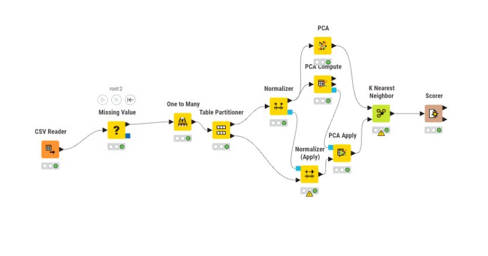
1. CSV Reader#
Node ini digunakan untuk membaca dataset dari file CSV.
Fungsi:
Mengimpor data ke KNIME.
Menentukan tipe data awal.
Hal yang perlu dicek pada tahap ini:
Delimiter file (
,atau;) harus sesuai.Header kolom harus terbaca sebagai nama atribut, bukan baris data.
Tipe data penting (numerik/kategorikal) tidak boleh tertukar.
Kesalahan konfigurasi pada tahap awal dapat berdampak ke seluruh alur analisis, misalnya angka terbaca sebagai teks sehingga tidak dapat dinormalisasi.
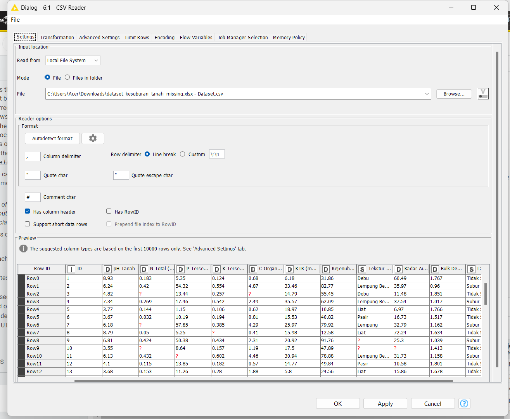
2. Missing Value#
Node ini digunakan untuk menangani data kosong.
Pengaturan:
Numerik -> Mean
Kategorikal -> Most Frequent
Alasan:
KNN tidak dapat memproses nilai kosong.
Menghindari error saat proses training.
Pendekatan imputasi dipilih karena menghapus baris dapat mengurangi jumlah data pelatihan. Dengan imputasi:
Informasi mayoritas data tetap dipertahankan.
Distribusi data relatif stabil.
Pada praktiknya, imputasi untuk kolom target tidak dilakukan. Jika label target kosong, baris tersebut sebaiknya dikeluarkan dari data pelatihan karena dapat mengganggu proses belajar model.
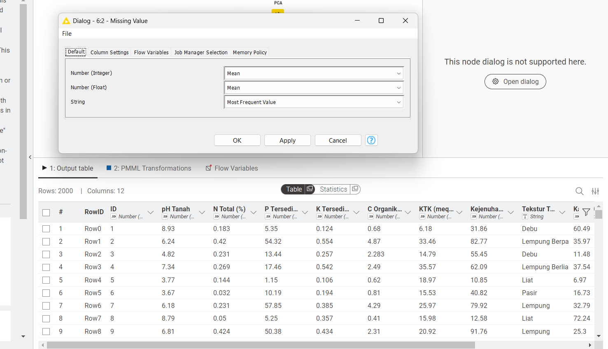
3. One to Many (Encoding)#
Node ini digunakan untuk mengubah data kategorikal menjadi numerik.
Contoh encoding:
Lempung ->
[1, 0, 0]Pasir ->
[0, 1, 0]
Kategori tekstur tanah yang ikut di-encode pada data ini adalah:
Debu
Lempung Berpasir
Lempung Berliat
Liat
Pasir
Lempung
Kategori tersebut muncul berulang di dataset, jadi semua nilai uniknya tetap perlu masuk ke proses encoding.
Catatan:
Hanya fitur Tekstur Tanah yang diubah.
Label target tidak boleh diubah.
Encoding ini penting karena KNN bekerja pada ruang vektor numerik. Jika fitur kategorikal tidak diubah ke angka, jarak antar data tidak bisa dihitung secara matematis.
One to Many lebih aman dibanding menggunakan node Rule engine di knime dimana node tersebut memberi kode angka langsung (misalnya Pasir=1, Lempung=2) karena angka langsung bisa memberi kesan urutan palsu antar kategori.
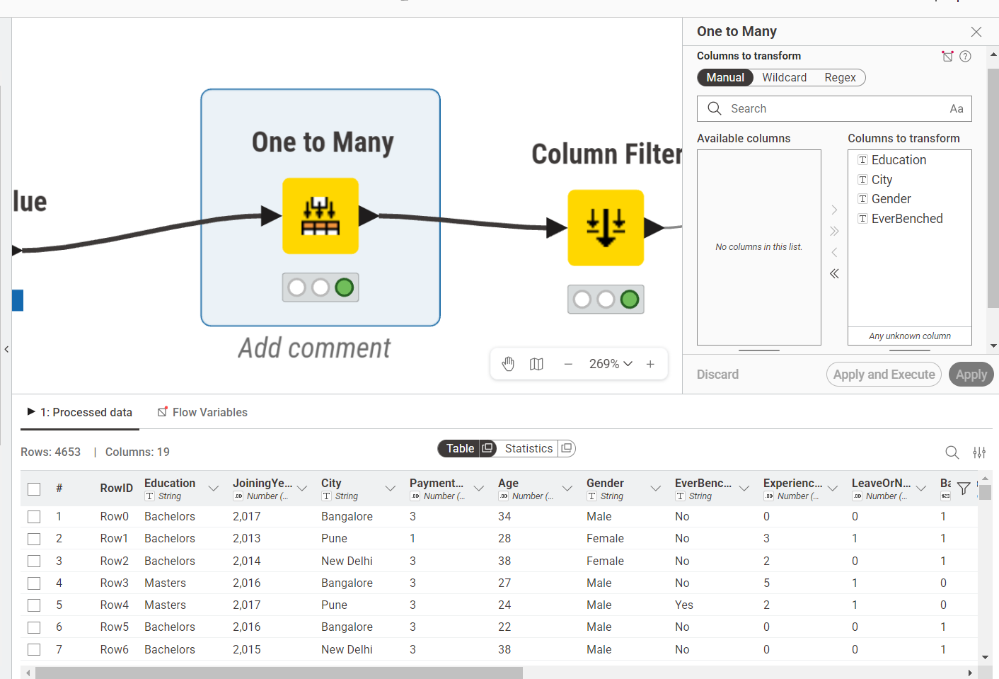
4. Partitioning#
Node ini digunakan untuk membagi data menjadi:
80% data training
20% data testing
Hasil pembagian ini muncul sebagai dua partisi, yaitu partition1 untuk data training 80% dan partition2 untuk data testing 20%.
Alasan:
Data training digunakan untuk melatih model.
Data testing digunakan untuk evaluasi model.
Pembagian menggunakan stratified sampling agar proporsi kelas tetap 50:50.
Dengan total 2000 data, komposisi pembagian menjadi:
Training: 1600 data
Testing: 400 data
Karena data seimbang, stratifikasi menjaga agar distribusi kedua kelas pada train dan test tetap proporsional. Ini penting supaya hasil evaluasi tidak bias terhadap salah satu kelas.
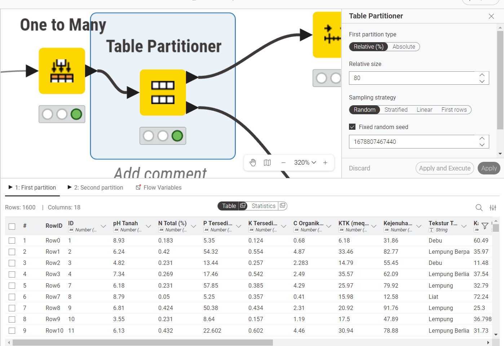
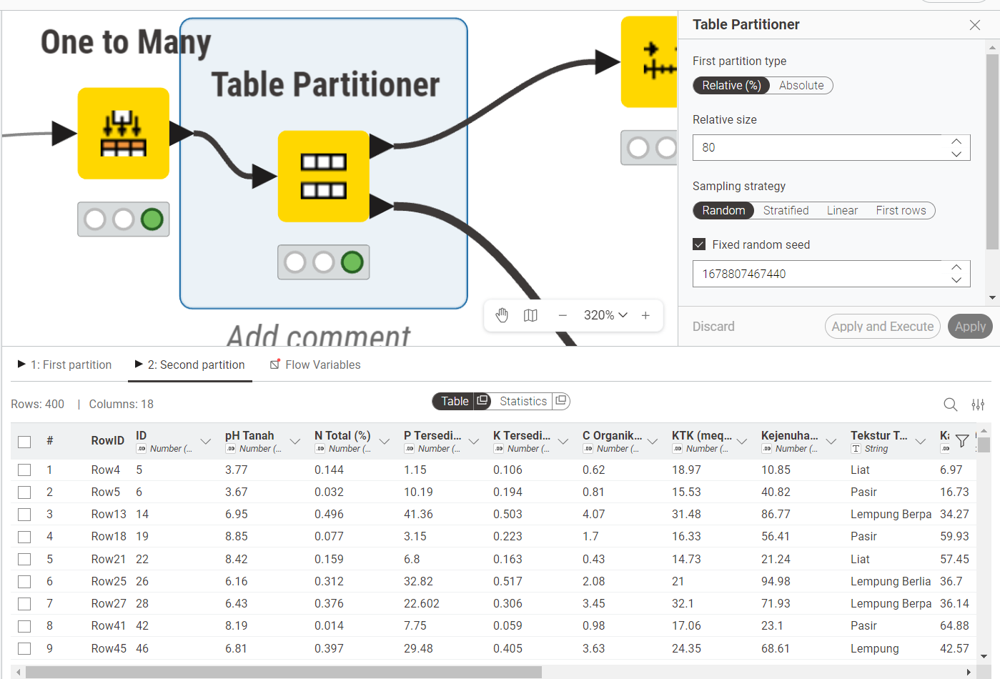
5. Normalizer (Default)#
Node ini digunakan untuk menyamakan skala data pada rentang 0-1 dengan pengaturan default.
Alasan:
KNN menggunakan perhitungan jarak (Euclidean).
Tanpa normalisasi, fitur berskala besar akan mendominasi.
Proses:
Data training -> menghitung nilai minimum dan maksimum.
Data testing -> mengikuti parameter normalisasi dari data training.
Normalisasi min-max umumnya mengikuti rumus:
Rumus ini memastikan setiap fitur berada pada rentang yang sebanding. Tanpa langkah ini, fitur dengan rentang besar dapat mendominasi jarak Euclidean dan membuat kontribusi fitur lain menjadi sangat kecil.
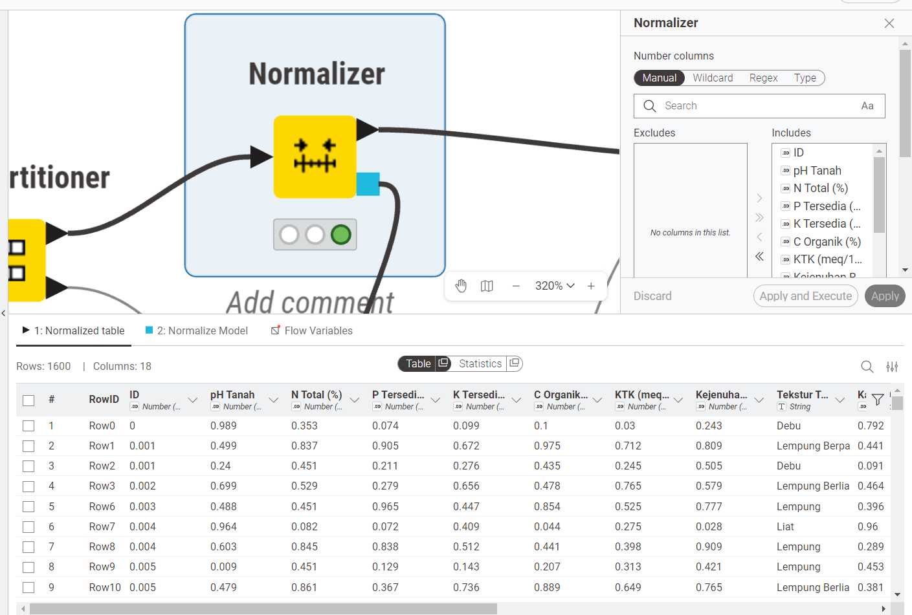
6. Apply Model (Normalizer)#
Node ini menerapkan model normalisasi default dari data training ke data testing.
Alasan:
Menghindari data leakage.
Menjaga konsistensi skala antara data training dan testing.
Jika data testing dinormalisasi secara terpisah (menggunakan min-max milik test), maka informasi dari data uji ikut membentuk transformasi. Kondisi ini menyebabkan evaluasi terlalu optimis dan tidak mencerminkan performa riil model saat diterapkan pada data baru.
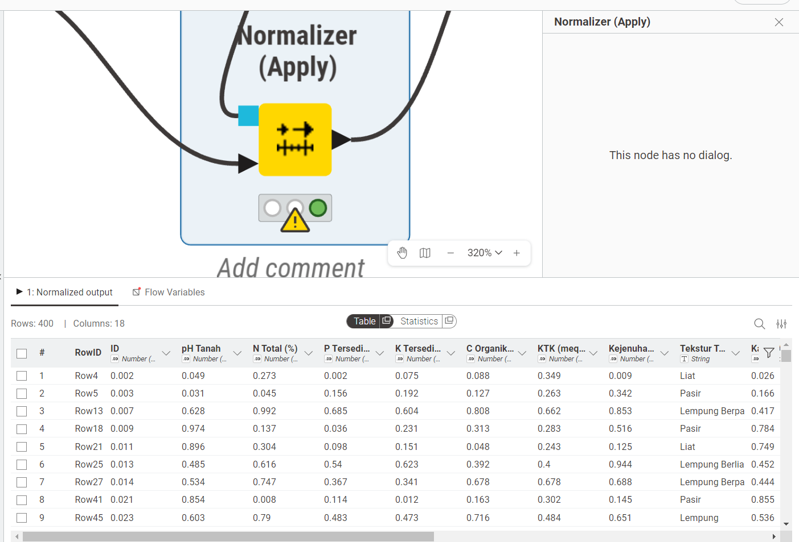
7. PCA (Opsional)#
PCA digunakan untuk mengurangi jumlah dimensi fitur tanpa menghilangkan informasi yang terlalu penting. Intinya, PCA akan mengubah fitur-fitur asli menjadi kumpulan komponen baru yang saling bebas dan diurutkan dari kontribusi variasi terbesar. Karena itu, PCA sering dipakai saat data punya banyak fitur atau antarfiturnya saling berkorelasi.
Pada dataset ini, PCA saya gunakan bukan untuk membuat model sekecil mungkin, tetapi untuk mencari titik tengah antara penyederhanaan data dan kualitas hasil. Kalau dimensi dibuat terlalu kecil, informasi yang dibutuhkan model untuk membedakan kelas jadi ikut berkurang. Itu sebabnya saya tidak memakai 3 dimensi. Dari percobaan yang saya lakukan, 3 dimensi masih menghasilkan akurasi yang jauh lebih rendah, sekitar 62%, jadi hasilnya belum layak dipakai sebagai konfigurasi utama.
Proses PCA compute adalah tahap ketika model PCA dibangun dari data training. Di sini sistem menghitung arah komponen utama, lalu menentukan seberapa besar informasi yang bisa dipertahankan oleh tiap komponen. Tahap ini penting karena semua parameter PCA harus dipelajari dari data training, bukan dari data testing, supaya evaluasi tetap adil dan tidak terjadi kebocoran informasi.
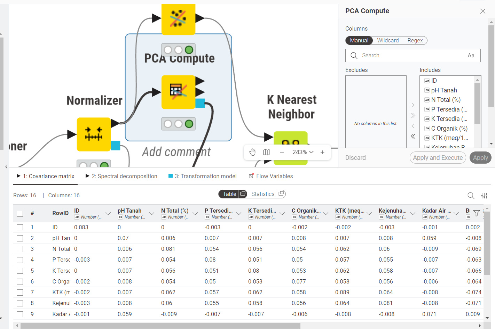
Setelah itu masuk ke PCA apply, yaitu tahap ketika model PCA yang sudah dihitung tadi diterapkan ke data testing. Fungsinya supaya data uji ikut masuk ke ruang dimensi yang sama seperti data latih, sehingga model KNN bisa membandingkan keduanya dalam representasi yang konsisten. Pada bagian ini saya memakai 8 dimensi karena hasil evaluasinya masih di atas 90%, sekitar 91%. Artinya, sebagian besar informasi penting masih tersimpan, tetapi data sudah cukup disederhanakan untuk membantu proses klasifikasi.
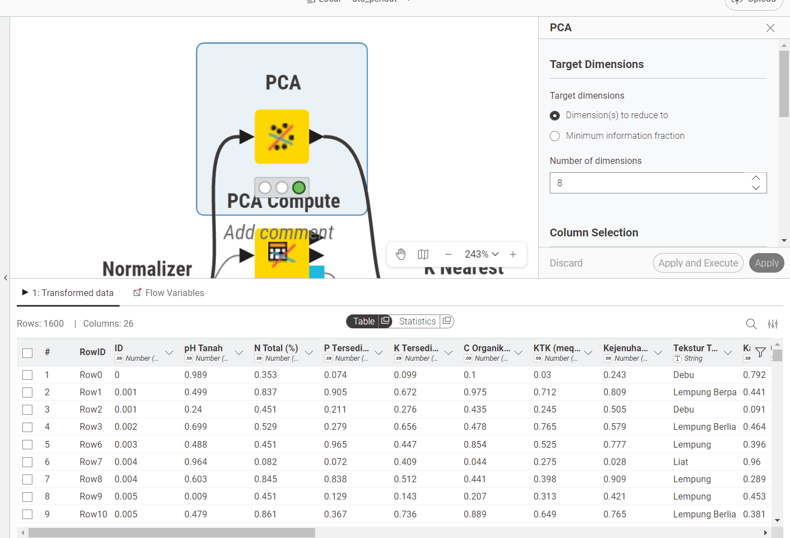
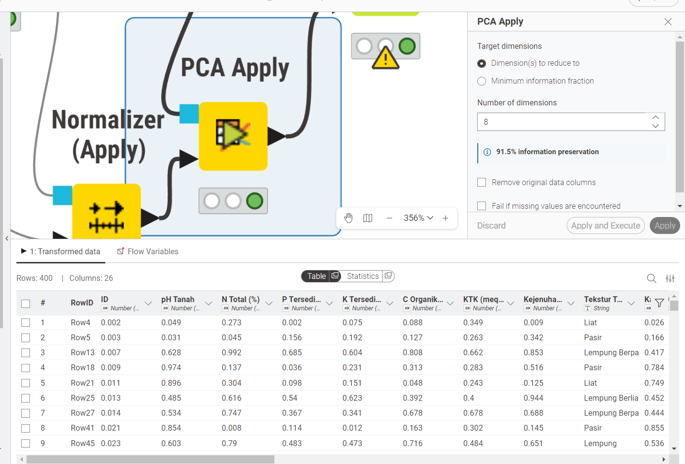
Jadi, alasan utama memilih 8 dimensi adalah karena konfigurasi ini masih menjaga akurasi tetap tinggi, sementara 3 dimensi justru terlalu agresif dan membuat performa turun cukup jauh. Dalam kasus ini, 8 dimensi adalah pilihan yang paling masuk akal karena masih mampu mempertahankan informasi penting sambil tetap memberi manfaat reduksi dimensi.
8. K-Nearest Neighbor (KNN)#
Node ini digunakan untuk klasifikasi data.
Parameter utama:
k = 3Distance = Euclidean
Cara kerja singkat:
Mencari tetangga terdekat dari data uji.
Menentukan kelas berdasarkan voting mayoritas.
Perhitungan jarak Euclidean antara dua titik data \(A(a_1, a_2, ..., a_n)\) dan \(B(b_1, b_2, ..., b_n)\):
Pemilihan k = 3 digunakan agar model tetap cukup peka terhadap pola tetangga terdekat tanpa terlalu mudah terpengaruh noise.
Dengan nilai ini, model masih bisa menangkap struktur lokal dari data, tetapi tidak terlalu bergantung pada banyak tetangga yang mungkin berasal dari kelas berbeda.
Nilai k ideal biasanya ditentukan melalui validasi (misalnya cross-validation), namun pada percobaan ini k = 3 sudah menghasilkan performa optimal.
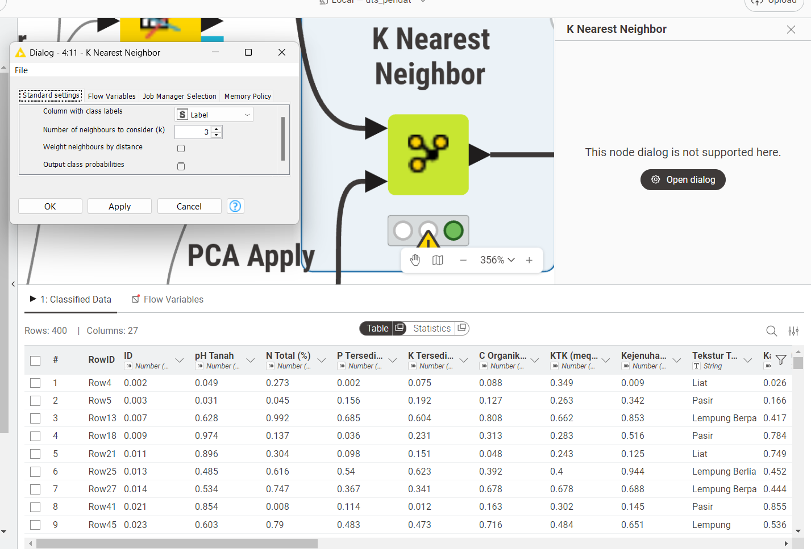
9. Scorer#
Node ini digunakan untuk mengevaluasi performa model.
Output evaluasi:
Accuracy
Precision
Recall
F1-score
Confusion Matrix
Definisi singkat metrik:
Accuracy: proporsi prediksi benar dari seluruh data uji.
Precision: ketepatan prediksi pada kelas positif.
Recall: kemampuan menangkap seluruh data positif aktual.
F1-score: harmonisasi precision dan recall.
Penggunaan banyak metrik penting agar evaluasi tidak hanya bergantung pada satu angka.
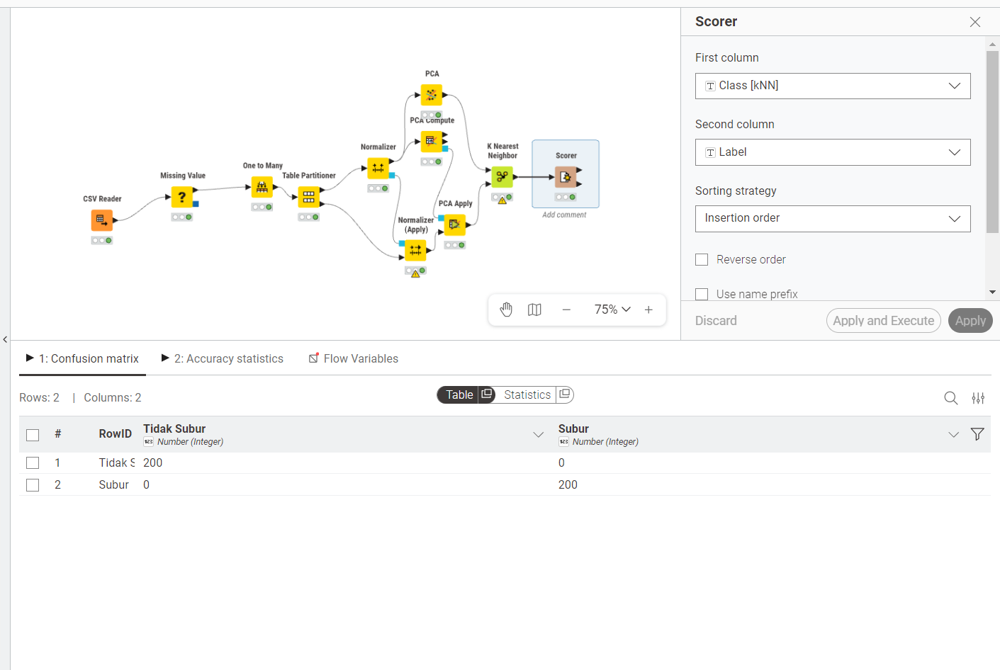
Setelah model dijalankan, hasil evaluasi menunjukkan performa yang sangat baik. Confusion matrix pada Scorer memperlihatkan bahwa prediksi model sudah sesuai dengan label asli, sehingga akurasi akhir tetap tinggi dan proses klasifikasi berjalan stabil.
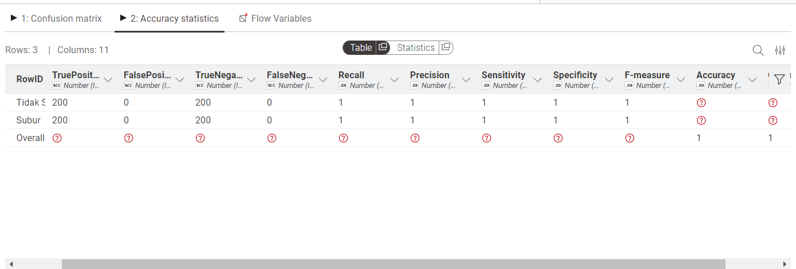
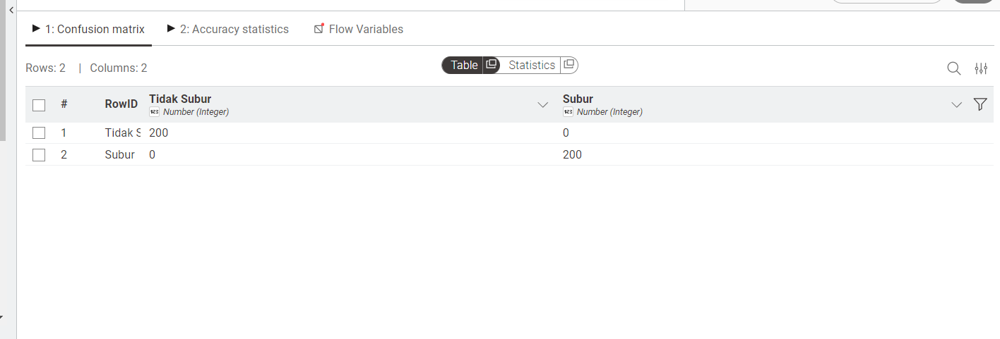
Kesimpulan#
Model KNN menghasilkan akurasi 100%.
Tahap preprocessing berpengaruh besar terhadap hasil akhir.
Dataset memiliki pola yang sangat jelas antar kelas.
PCA 8 dimensi dipilih karena masih menjaga akurasi tetap tinggi sambil tetap mereduksi dimensi.
Secara metodologis, eksperimen ini menegaskan bahwa urutan proses yang benar (pembersihan data -> split -> normalisasi berbasis training -> pemodelan -> evaluasi) sama pentingnya dengan pemilihan algoritma.